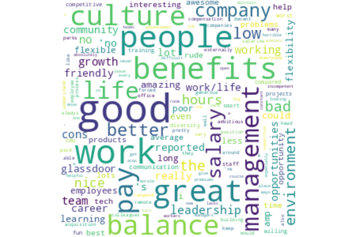
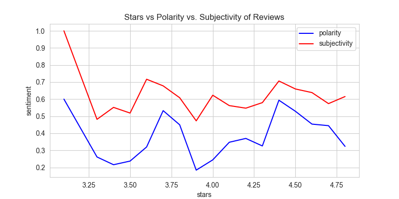
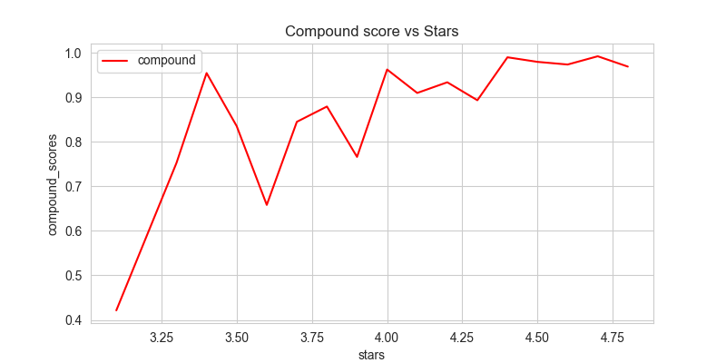
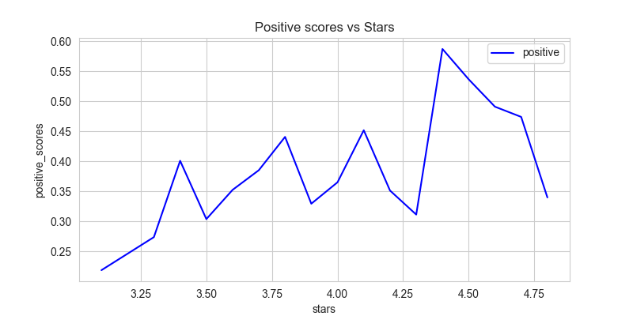
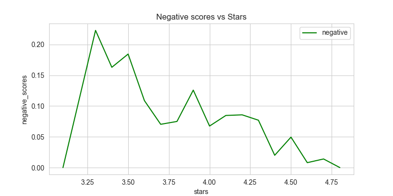

Sentiment Analysis on glassdoor.com data science jobs
Project Overview
The goal of this project was to scrape some reviews from glassdoor.com from data science job postings and to analyze company reviews and perform sentiment analysis to understand what users were writing. I also wanted to investigate how the number of stars given to a company related to the sentiment in the review. I wrote an article on my page on medium.com and I also wanted to share the jupyter notebook.
Web Scrapping Glassdoor Data
Since glassdoor.com does not have an available API, I decided to try out web scrapping on a few glassdoor.com machine learning job listings with company reviews. I was only able to scrape a small amount of reviews before getting the 403 Forbidden Error. To scrape data I used Selenium and BeautifulSoup packages. Below are two of the main functions I used to scrape data using BeatufifulSoup:
def get_page(url, headers):
"""
Function to get webpage results into Beautifulsoup object
"""
try:
req = Request(url, headers=headers)
page = urlopen(req)
soup = BeautifulSoup(page, "html.parser")
return soup
except HTTPError as e:
print(f"Error opening page {e}")
To pull job listings I used the below:
def get_jobs():
"""
Function to get job listing table from glassdoor.com
It will load webpage first then loop through table
It will return data with columns:
[company, job_title, job_url, job_id]
"""
# load webpage using Beautifulsoup first
soup = get_page()
table = soup.find("table")
table_rows = table.find_all("tr")
data_dict = {}
data_list = []
# loop through table rows and extract information to dictionary
for elem in table_rows[1:]:
try:
data_dict["company"] = elem.find("td", {"class": "company"}).text
except AttributeError:
data_dict["company"] = None
try:
data_dict["job_title"] = elem.find("td", {"class": "job_title"}).text
except AttributeError:
data_dict["job_title"] = None
try:
data_dict["job_url"] = elem.find("a", {"class": "jobLink"})["href"]
except AttributeError:
data_dict["job_url"] = None
data_list.append(data_dict)
data_dict = {}
# put results in dataframe
data = pd.DataFrame(data_list)
# add column with job listing Id number
data = data.assign(
job_id=data.job_url.map(
lambda x: re.findall(pattern="jobListingId=[0-9]+", string=x)[0]
).map(lambda x: x.strip("jobListingId="))
)
# add column with url
listing_base_url = f"https://www.glassdoor.com/job-listing/?jl="
data = data.assign(
url=data.job_id.map(lambda x: listing_base_url + str(x))
)
return data
Text Preprocessing
In order to proceed with sentiment analysis, I first had to do some text preprocessing: remove punctuation, numbers and stop words. When working on NLP projects, I am usually a big fan of the NLTK library, but this time I wanted to try out TextBlob. Cleaning text data can be as simple as the below line of code:
# assign new clean review column
df = df.assign(clean_review = df.reviews.map(lambda x: ' '.join(TextBlob(str(x)).words)))
In addition, I removed common words such "a", "an","the","in" which usually get ignored by typical tokenizers. These are called stopwords and NLTK includes a list of 40 stop words, but you can add more words and customize your own list of stopwords.
# Remove stopwords & lowercase
df.clean_review = df.clean_review.map(lambda x: " ".join([i.lower() for i in x.split() if i not in stopwords.words('english')]))
Data Exploration & Visualization
Once the data is cleaned I can finally move on to the fun part, visualizations! I wanted to create a word cloud of the most frequent words in the reviews, so I created word counts:
# collect words
word_list = []
word_list.extend(df.clean_review.str.split())
# flatten list of words - exclude the word reviews
word_list = [item for row in word_list for item in row if item !='reviews']
# create counter - we want word frequencies
word_counts = Counter(word_list)
And what words appear the most? "good", "work", "people", "great", "benefits", "culture", "balance", "pay", "management", "life" are all among the top 10 most common words in the dataset. This isnt surprising, I think it represents what most people are looking for in a good work environment.
WordClouds
Creating wordcloud visualizations are pretty straightforward once you have the word counts:
# Wordcloud
wordcloud = WordCloud(width = 300,
height = 300,
background_color='white',
max_font_size=50, max_words=150)
wordcloud = wordcloud.generate_from_frequencies(word_counts)
# plot words
plt.figure(figsize=(6,4),facecolor = 'white', edgecolor='blue')
plt.imshow(wordcloud, interpolation="bilinear")
plt.axis("off")
plt.tight_layout(pad=0)
plt.title("Top Glassdoor.com words")
plt.savefig("review_wordcloud.png")
plt.show()

Sentiment Analysis using TextBlob Polarity and Subjectivity
TextBlob provides the ability to look at sentiment analysis by breaking it down into polarity and subjectivity:
- Polarity is between -1 and 1: it identifies the most negative as -1 and positive as +1
- Subjectivity is between 0 and 1 and shows the amount of personal opinion: 0 is very objective while 1 is subjective
- TextBlob allows us to see the sentiment for each word using sentiment_assessment, so we can get a better understanding of how words are scored
Finding the polarity and subjectivity in a string using TextBlob can be done in a few lines of code:
sample_string = df.clean_review.iloc[0]
# polarity & subjectivity:
print(f"Sample Review:\n{sample_string}\nTextBlob polarity:{TextBlob(sample_string).sentiment.polarity}"
f" and subjectivity:{TextBlob(sample_string).subjectivity}")
# we can see the sentiment assessment of each word in our sample sentence
TextBlob(sample_string).sentiment_assessments[2]
python output:
Sample Review with 4.1 stars: good place retire since benefits good willing sacrifice salary/growth reviews great culture open learning environment reviews nice people work reviews very flexible good work life balance reviews good pay good hours reviews long hours culture staying late reviews difficult maintain good work/life balance reviews bad pay promotion hard get reviews TextBlob polarity:0.26 and subjectivity:0.63
Note: the above sample review is cleaned: it has stopwords removed, no numbers and stripped whitespaces.
Part of the sentiment assessment looks like this. It returns a tuple with (polarity, subjectivity, assessments). We see more negative words "bad", "difficult" and "hard" have negative polarity.
[(['good'], 0.7, 0.60, None), (['willing'], 0.25, 0.75, None), (['great'], 0.8, 0.75, None), (['open'], 0.0, 0.5, None), (['nice'], 0.6, 1.0, None), (['long'], -0.05, 0.4, None), (['late'], -0.3, 0.6, None), (['difficult'], -0.5, 1.0, None), (['bad'], -0.699, 0.66, None), (['hard'], -0.29, 0.54, None)]
.... So far so good, it looks like TextBlob assigns a more positive sentiment score to the first review which makes sense and also aligns with the number of stars on glassdoor.com.
But can we trust stars given in reviews?
- After plotting polarity and stars, we can see that polarity should be increasing as stars increase but this is not the case.
- Polarity is higher for 3.75 star rated reviews than for reviews with 4.0 stars. This is inconsistent with what we would expect.
- We also see the review for the "worse" rating of 3.1 does not correspond to a negative review
# let's find worse review
worse_stars = df.stars.min()
worse_review = df[df.stars == df.stars.min()].clean_review.values[0]
worse_company = df[df.stars == worse_stars].company.values[0]
w_polarity = TextBlob(worse_review).polarity
w_subjectivity = TextBlob(worse_review).subjectivity
# here we can see that this review is not bad: Textblob identifies it as more positive than negative based on polarity closer to 1
print(f"{worse_company} with {worse_stars} has the worse review:\n{worse_review}")
print(f"\nBut TextBlob indicates it has {w_polarity} polarity and {w_subjectivity}")
python output:
Epic Pharma LLC with 3.1 has the worse review:
the people working company nice reviews 'no cons reported glassdoor community
But TextBlob indicates it has 0.6 polarity and 1.0
When plotting polarity and subjectivity vs. stars given we see that polarity should be increasing as stars increase but that is not always the case. For example, polarity is higher for 3.75 star rated reviews than for reviews with 4.0 stars.

VADER and Sentiment Analysis
VADER Sentiment Analysis. VADER (Valence Aware Dictionary and Sentiment Reasoner) is a lexicon and rule-based sentiment analysis tool that is specifically attuned to sentiments expressed in social media, and works well on texts from other domains.
It’s important to understand the output VADER provides: it is a Python dictionary with keys ‘neg’, ‘neu’, ‘pos’ — which correspond to Negative, Neutral, and Positive. It also has a Compound score which is a score calculated by normalizing the other 3 scores (neg, neu, pos). This score tells us the intensity or degree of the sentiment and not the actual values. Its values range from -1 (for extreme negative sentiment) to +1 (for extreme positive sentiment).
Using the compound score can be enough to determine the underlying sentiment of a text, because for:
a positive sentiment, compound ≥ 0.05 a negative sentiment, compound ≤ -0.05 a neutral sentiment, the compound is between [-0.05, 0.05]
# initialize sentiment analyzer
sid_obj = SentimentIntensityAnalyzer()
# going back to our sample string
# it has a high compound score! it's positive
sid_obj.polarity_scores(sample_string)
Here is our sample string:
'good place retire since benefits good willing sacrifice salary/growth reviews great culture open learning environment reviews nice people work reviews very flexible good work life balance reviews good pay good hours reviews long hours culture staying late reviews difficult maintain good work/life balance reviews bad pay promotion hard get reviews'
And the sentiment analyzer output: {'neg': 0.137, 'neu': 0.469, 'pos': 0.394, 'compound': 0.9646}
Once we get all the compound, positive and negative scores we can plot them each against the stars given:
Since compound scores greater than or equal to 0.5 are considered positive we should see a more linear relationship:

Here we see the positive scores vs. stars given:

And lastly, here are the negative scores vs. stars given: 